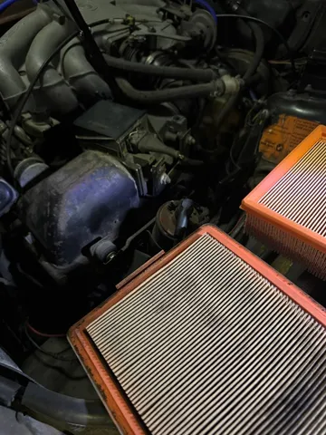
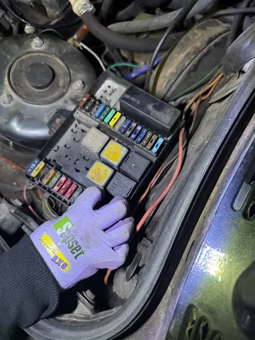
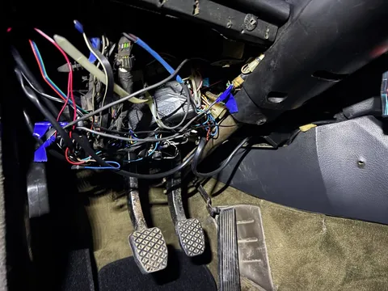
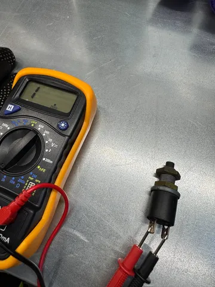

Вчера снова развлекались в формате #лёха_строит_бэху.
0. Для начала нужно было "оживить" Лёхин комбез, чтобы он смотрелся солидней. Купил все около-автомобильные нашивки, какие нашел на Маркете, жена их пришила/приклеила, получилось, по-моему, здорово. Не так здорово, как мой форвардовский, но тоже хорошо.
1. Начали с простого - поменяли коврики в салоне. Там, как водится, были унылые резиновые коврики. Признаюсь, ненавижу эти кровостоки. Ковер должен быть ковром - ворсовый, пушистый, мягкий, уютный. Такие и купил, и вот - положили. Выбор ковров для e30 на маркетплейсах был невелик - 1 вариант - и тот не полностью подошел по форме, но пока и так сойдет.
2. Вторым пунктом плана на эти выходные была замена воздушного фильтра двигателя. Вроде все просто - 4 защелки, 2 болта и крышка снята. Но к ней подходит такое количество трубок и проводов, что снять ее, на самом деле, почти нереально. Однако, отвести достаточно, чтобы вытащить фильтр, оказалось возможным. Но вот незадача - новый фильтр совершенно не такой, как старый по форме. Лоханулся, думаю. Однако, дома открыл оригинальный электронный каталог - там фильтр нарисован правильный (какой стоит), а по каталожным номерам бьется что-то другое (какое и купил), как будто ошибка в каталожном номере... Парадокс, буду искать теперь по фото. Тут, пока что, фиаско.
3. Третий и заключительный пункт выходных - разобраться, почему у нас не горят стоп-сигналы. Сначала проведем мысленный эксперимент и проследим цепочку событий. Когда я нажимаю на педаль тормоза, срабатывает датчик педали (ака "лягушка"). Далее сигнал идет через предохранитель в подкапотном блоке. Потом по проводке через всю машину электричество бежит к фонарям. Значит, проблема может быть либо в лягушке, либо в предохранителе, либо в проводке (хоть бы не в ней!), либо в фишках фонарей, либо в лампочках.
Первым делом проверили самое простое и доступное - преды. Там, конечно, как водится - бардак. Половина предов неправильного номинала, несколько - вовсе отсутствуют. Но пред на стопы на месте и целый. Даже поставили на его место другой подходящий - не сработало. А жаль.
Дальше полезли искать лягушку. Раскорячившись сам в позе той самой лягушки, залез с головой под педали, вооружившись двумя фонариками. Дохлый номер. Пришлось немного подразобрать обшивку под рулевой колонкой. Вот же она! Занятно, что у e30 ляшуха стоит не под педалью, а над ней, и срабатывает не на нажатие, а на отхождение педали от контакта лягухи. Ну окей. Взял раздомный провод и замкнул контакты, подходящие к датчику. Ура, стопы горят! Значит, надо менять лягушку. Вернувшись домой, залез в каталоги, нашел нужный партнамбер. К счастью, заменитель нашелся в наличии и был незамедлительно заказан.
Спустя пару часов новая лягушка уже заняла свое законное место. Стопы работают исправно, ура! И пусть это не самая громкая победа, такие достижения нас с Лехой мотивируют. В чем-то новом разобрались, диагностировали, починили, собрали, работает - ради этих маленьких радостей и возимся.
